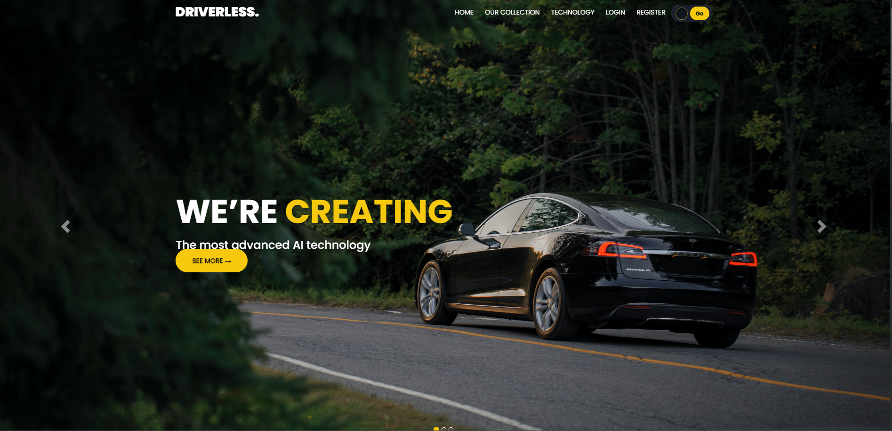

University of Bolton · Web development
Driverless Website
A vehicle-focused website presented through a photographic landing page and a card-based collection. A dark canvas and yellow accents give the interface a consistent visual identity.
Explore the case study
The project
A University of Bolton academic website exploring driverless vehicles. These are original project screens, not portfolio mockups.
The interface
The homepage uses a full-width car photograph, a prominent headline, and a primary action. The collection screen groups vehicle imagery, descriptions, specifications, and actions into cards.
What the screens show
Navigation connects the homepage, collection, technology, and account areas. White text establishes hierarchy; yellow highlights headings and actions. The screenshots document the visual interface, not verified vehicle capabilities or production booking functionality.